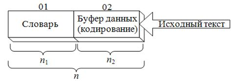
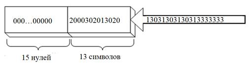
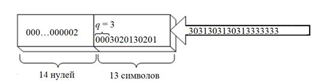
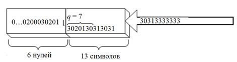
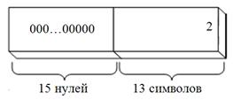
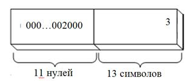
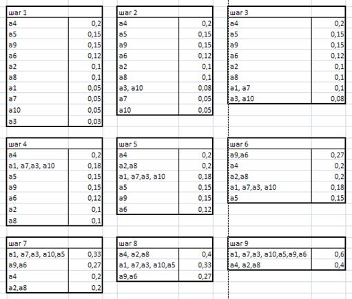
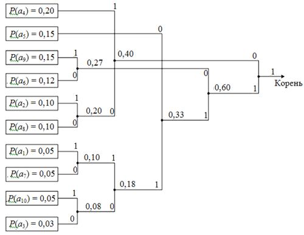
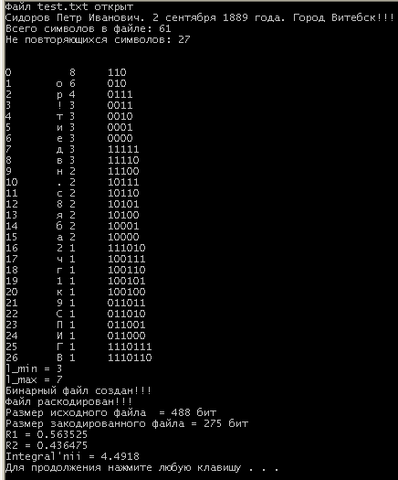

ЛАБОРАТОРНАЯ РАБОТА № 15
АЛГОРИТМЫ АРХИВАЦИИ ИНФОРМАЦИИ
Цель работы — изучить основные методы и алгоритмы архивации информации; запрограммировать алгоритм архивации по методу Хаффмана.
Теоретическая часть
Сжатие данных (архивация, компрессия) — процедура перекодирования данных, производимая с целью уменьшения их объёма.
Характерной особенностью большинства типов данных является их избыточность. Примером избыточности является повторение в тексте фрагментов (например, слов естественного или машинного языка). Степень избыточности данных зависит от типа данных. Например, для видеоданных степень избыточности в несколько раз больше чем для графических данных, а степень избыточности последних, в свою очередь, больше чем степень избыточности текстовых данных. Другим фактором, влияющим на степень избыточности является принятая система кодирования. Примером систем кодирования могут быть обычные языки общения, которые являются ни чем другим, как системами кодирования понятий и идей для высказывания мыслей.
Основной особенностью методов сжатия является то, что количество данных после преобразования, т. е. после сжатия, как правило, меньше чем до преобразования.
Методы компрессии информации преследуют три основные цели:
1) сокращение физического объема хранимой на носителях информации;
2) снижение стоимости передачи фиксированного объема информации (стоимости трафика);
3) повышение уровня конфиденциальности информации.
В настоящее время существуют различные классификации методов сжатия данных.
В зависимости от того, в каком объекте размещены данные, подлежащие сжатию различают:
1) Сжатие (архивация) файлов: используется для уменьшения размеров файлов при подготовке их к передаче каналами связи или к транспортированию на внешних носителях маленькой емкости;
2) Сжатие (архивация) папок: используется как средство уменьшения объема папок перед долгим хранением, например, при резервном копировании;
3) Сжатие (уплотнение) дисков: используется для повышения эффективности использования дискового пространства путем сжатия данных при записи их на носителе информации (как правило, средствами операционной системы).
С точки зрения технологии реализации методов сжатия, их условно можно разделить на три основных класса:
1) символ-ориентированные (или словарные) методы основаны на поиске и анализе повторяющихся символов (комбинаций) и их замене на другие комбинации меньшей длины;
2) вероятностные методы базируются на анализе вероятностных (частотных) характеристик используемого алфавита;
3) комбинированные методы объединяют первые и вторые, что может давать новые качественные свойства.
Существует три теоретических способа уменьшения избыточности данных. Первый способ состоит в изменении содержимого данных, второй - в изменении структуры данных, а третий - в одновременном изменении как структуры, так и содержимого данных.
Если при сжатии данных происходит изменение их содержимого, то метод сжатия называется необратимым (сжатие с частичной потерей информации), то есть при восстановлении (разархивировании) данных из архива не происходит полное восстановление информации. Понятно, что эти методы можно применять только для таких типов данных, для которых потеря части содержимого не приводит к существенному искажению информации. К таким типам данных относятся видео- и аудиоданные, а также графические данные. Примерами форматов сжатия с потерями информации могут быть:
• JPEG - для графических данных;
• MPG - для для видеоданных;
• MP3 - для аудиоданных.
Если при сжатии данных происходит только изменение структуры данных, то метод сжатия называется обратимым (сжатие без потерь информации). В этом случае, из архива можно восстановить информацию полностью. Обратимые методы сжатия можно применять к любым типам данных, но они дают меньшую степень сжатия по сравнению с необратимыми методами сжатия. Примеры форматов сжатия без потери информации:
• GIF, TIFF - для графических данных;
• AVI - для видеоданных;
• ZIP, ARJ, RAR, CAB, LH - для произвольных типов данных.
Существует много разных практических методов сжатия без потери информации, которые, как правило, имеют разную эффективность для разных типов данных и разных объемов.
Основными техническими характеристиками процессов сжатия и результатов их работы являются:
- степень сжатия (compress rating) или отношение (ratio) объемов исходного и результирующего потоков;
- скорость сжатия — время, затрачиваемое на сжатие некоторого объема информации входного потока, до получения из него эквивалентного выходного потока;
- качество сжатия - величина, показывающая на сколько сильно упакован выходной поток, при помощи применения к нему повторного сжатия по этому же или иному алгоритму.
Основной численной характеристикой методов сжатия является коэффициент сжатия R. Указанный параметр рассчитывают двумя способами:
,
где − объем информации после сжатия; – объем информации до сжатия. Коэффициент RI показывает, какая доля исходной информации еще может быть сжата, RII — какая доля исходной информации сжат.
Важными понятиями при изучении процессов связанных с архивацией данных являются понятия архиватор и разархивация (распаковка).
Архиватор — специальная компьютерная программа, позволяющая архивировать файлы сжатием хранимой в них информации.
Разархивация (распаковка) — восстановление файла из архива с помощью, как правило, той же программы, которой он был заархивирован.
Символ ориентированные методы сжатия
1. Метод интервалов
Одним из наиболее простых в анализируемой группе методов является метод интервалов. Суть метода заключается в поиске комбинаций одинаковых символов и замене их на специальную комбинацию abc, где а – специальный символ, b – один из символов анализируемой повторяющейся последовательности (интервала) и с – количество повторений. Как правило, принимается, что длина минимального интервала составляет два символа. При реализации метода сжатия важным является выбор специального символа (а). Его подбирают так, чтобы вероятность его появления в тексте стремилась к минимуму.
Пример. Пусть исходное сообщение имеет вид Xk = mkkkcb0000fkff. Можно выделить три интервала (подчеркнуты): Xk = mkkkcb0000fkff. Возьмем в качестве специального символ «*». После преобразования (сжатия) получим такую последовательность: Xn = m*k3cb*04fk*f2.
Как видно из примера, метод является эффективным при количестве повторений не ниже трех.
Более простой реализацией метода интервалов является алгоритм RLE (групповое кодирование). От предыдущего алгоритма он отличается тем, что длина минимального интервала составляет один символ. Каждый интервал заменяется комбинацией bc, где b – один из символов анализируемой повторяющейся последовательности (интервала) и с – количество повторений.
Пример. Пусть задана такая последовательность данных Xk =1 1 1 1 2 2 3 4 4 4. После преобразования имеем Xn = 1 4 2 2 3 1 4 3.
2. Метод Берроуза-Уиллера
Суть метода состоит в том, что исходная информационная последовательность Xk разбивается на блоки произвольной, но одинаковой длины k. Преобразованию подвергается каждый блок в отдельности. На каждом этапе создается квадратная матрица W1 размерности k × k. Каждая последующая строка этой матрицы, начиная со второй, является циклическим сдвигом на один символ влево предыдущей строки. На основе первой матрицы создается вторая матрица (W2) такой же размерности, содержащая строки первой матрицы, отсортированные в лексикографическом порядке.
Результатом преобразования является последний столбец hk матрицы W2 и число N, соответствующее номеру строки матрицы W2, в которой записана исходная последовательность Xk .
Обратное преобразование основано на свойстве рекуррентности преобразования матриц W1 и W2. Задача состоит в воссоздании матрицы W2. Эта процедура начинается с заполнения последнего столбца будущей матрицы. Дальнейшие действия иллюстрируются на основе используемого примера.
Пример. Пусть Xk = «столб». Как видим, k = 5. Строим, как показано ниже, соответствующие матрицы:
.
Окончательно имеем h5 = «лотбс», N = 4.
Информация после преобразования (условной компрессии) имеет больший объем, чем до преобразования (при неизменной длине сообщения дополнительно требуется передавать или хранить число N).
В силу этой особенности метод эффективен при сжатии информации, состоящей из ограниченного набора символов (например, тексты программ), при котором последний столбец имеет в своем составе практически одинаковые символы, которые могут быть заменены на иные, используя, например, предыдущий метод. С другой стороны, анализируемый метод также обеспечивает хороший уровень преобразования двоичных данных. На практике этот метод применяется совместно с другими.
Обратная процедура. Имеем Yk = «лотбс», N = 4. Строим матрицу W:
На каждой итерации происходит дополнение матрицы исходной последовательностью и лексикографическая сортировка строк. В результате получаем исходное слово Xk = «столб», которое размещается в четвертой строке восстановленной матрицы.
3. Словарные методы сжатия
В известном смысле таблицу кодов ASCII (American Standard Code for Information Interchange, американский кодовый стандарт для обмена информацией), в которой один символ исходного алфавита всегда представляется одним байтом двоичных символов, можно рассматривать как один из методов сжатия. Здесь таблица может выступать как своеобразный словарь. Словарь этот является полным и исчерпывающим. Однако на практике в словарь помещаются наиболее часто встречающиеся слова и словосочетания.
В общем случае словарь может содержать произвольное число комбинаций произвольной длины. Основным вопросом при этом является размер словаря.
Выделяют три вида словарей. Статический (неизменный) словарь строится предварительно для разнообразных типов документов и практически не изменяется. Полуадаптивный алгоритм предполагает создание словаря под конкретный тип документов. Адаптивный алгоритм строит словарь под каждый документ.
Важнейшей особенностью адаптивного (и в определенной степени – полуадаптивного) словаря является необходимость его передачи вместе со сжатой информацией.
4. Метод Лемпеля-Зива
Важнейшей особенностью метода Лемпеля – Зива является то, что не требуется передавать словарь, создаваемый под каждый документ. Этот словарь формально становится частью сжатой информации.
Преобразование информации заключается в «прохождении» текста через два окна и параллельном анализе символов с текущим словарем. Общая схема реализации алгоритма показана на рис. 15. 1.
Как правило, n (общая длина двух окон, называемых буферами) составляет и тысячи символов. Окно 02 – буфер данных, в него «въезжают» данные (исходный текст), которые нужно сжимать, кодировать. Далее эти данные «въезжают» в окно 01 – словарь, который изначально содержит NULL-строку.

Рис. 15. 1. Общий принцип преобразования данных по методу Лемпеля – Зива
Принцип состоит в том, чтобы выявить в тексте повторяющиеся комбинации. Анализируемые данные находятся в буфере кодирования, а обнаруженные ранее повторения – в словаре. Найденный повторяющийся ряд символов в буфере данных заменяется в основном парой (p, q) символов. Кроме этого, к данной паре добавляется еще один символ (сi), который является частью потока Xk и следует за найденным повторением в буфере данных. Буфер работает по принципу регистра сдвига.
Пример. Используем для передачи данных алфавит, состоящий из четырех знаков: А{0, 1, 2, 3}. Необходимо сжать последовательность:
Xk = 200030201302013031303130313333333.
Полагаем, что символам.
Для обозначения p и q используем четверичную систему счисления, где и т. д.
На первом шаге производится анализ в соответствии с рис. 15. 2.

Рис. 15. 2. Схематичное представление анализа на первом шаге преобразования
Анализируем первый символ в буфере кодирования на предмет соответствия (наличия) такого же символа или нескольких символов в словаре. Как видно из рис. 15. 2, таких символов нет, следовательно, принимается . Длина повторения . Таким образом, имеем следующую триаду: . Символ сi (2) сдвигается в левое окно (на q + 1 символов).
На втором шаге исходное состояние показано на рис. 15. 3.

Рис. 15. 3. Схематичное представление анализа на втором шаге преобразования
Находим повторение (000), длина этого повторения составляет три символа: . Поскольку в словаре нулевые символы записываются с 1-й по 14-ю позицию, то индексом р (началом повторения) может быть выбрано любое число от 1 до 12. Положим, выбрано 6: .
Итак, получим следующую триаду: . Содержимое буфера данных сдвигается на 4 позиции (на q + 1 символ).
На третьем шаге cитуация поясняется рис. 15. 4.

Рис. 15. 4. Схематичное представление анализа на третьем шаге преобразования
В этой ситуации наиболее длинный повтор – . Следовательно, .
Передвигаем анализируемую последовательность на позиции влево. Выходная триада будет следующей: .
На четвертом шаге анализируется состояние в соответствии с рис. 15.5.
В этой ситуации наиболее длинный повтор выглядит так: 3020130, . Осуществляем сдвиг на символов.
Очередная триада: .

Рис. 15. 5. Схематичное представление анализа на четвертом шаге преобразования
Подобным образом будет проанализирована вся входная последовательность. Полученные триады 00002 12033 22031 23133 30301 в принятой форме записи будут рассматриваться как входное сообщение на входе декомпрессора (обратного преобразования).
В исходном состоянии при обратном преобразовании в окно словаря записывают 15 нулей (рис. 15. 6).

Рис. 15. 6. Схематичное представление исходного состояния окон при обратном преобразовании данных по методу Лемпеля – Зива
Дальше анализируем очередные 5 символов (12033), из чего следует, что и . Поскольку в словаре содержатся только одни нули, то делается вывод: повтором является комбинация из трех нулей (000). В словарь записывается 000, а в буфер кодирования – 3 (рис. 15. 7). Подобным образом будет проанализирована вся входная последовательность. Результатом преобразования (декомпрессии) является сдвигаемое содержимое словаря.

Рис. 15. 7. Схематичное представление состояния окон после первого шага обратного преобразования
Статистические методы сжатия
Статистические методы используют вероятностные характеристики символов применяемого алфавита для построения стратегии сжатия. Среди этих методов наиболее известны метод Шеннона–Фано (Shannon–Fano) и метод Хаффмана (Huffman).
Основная идея методов состоит в замене символов исходного алфавита бинарными кодами (последовательностями) различной длины: символам с наибольшими вероятностями появления должны соответствовать коды наименьшей длины и наоборот.
Процесс генерации бинарных кодов должен отвечать двум основным требованиям, налагаемым на вид конечных кодовых комбинаций:
1) все комбинации должны быть различны (уникальны);
2) любая комбинация меньшей длины не может быть началом любой комбинации большей длины (свойство префикса).
Прямое преобразование (сжатие) состоит в замене каждого исходного символа соответствующим бинарным кодом, обратное преобразование – в обратной замене.
1. Метод Шеннона-Фано
Отсортированные вероятности появления всех символов алфавита в тексте делят на две части в такой пропорции, чтобы сумма вероятностей в каждой из частей была максимально близка к 0,5. Символам верхней части приписывается старший символ бинарного кода – 1, нижней части – 0. Далее каждая из двух частей в свою очередь делится также на две части в такой пропорции, чтобы сумма вероятностей появления символов алфавита, составляющих каждую из частей, характеризовалась наименьшей разностью. Символам верхней из полученных частей приписывается второй символ кода – 1, нижней – также второй символ, но 0.
Процесс деления и генерации очередных символов бинарного кода продолжается до тех пор, пока после всех операций разделения массива полученная часть (подмассив) не будет состоять только из одного символа исходного алфавита.
Пример. Имеем исходный алфавит А{аi}, [i = 1…10], т. е. мощность алфавита равна 10: N(A) = 10. Полагаем, что вероятности появления в документе каждого из символов алфавита соответствуют следующим значениям (помним, что сумма всех вероятностей равна 1):
Отсортируем эти вероятности в порядке убывания и разделим весь массив на две части с учетом вышеотмеченного правила. Положим, что верхнюю часть образуют символы (или соответствующие им вероятности) а4, а5, а9, нижнюю – а6, а2, а8, а1, а7, а10, а3. Верхним символам приписываем старший бит – 1, нижним – 0. В свою очередь, верхний подмассив делим на два очередных: один состоит из единственного элемента – а4, другой – из двух остальных. Каждому из трех этих символов приписываем по одному соответствующему символу бинарного кода. В результате всех делений и приписывания коду очередного двоичного символа получим следующие кодовые комбинации:
Как видим, коды соответствуют двум основным требованиям.
Блоки прямого и обратного преобразований осуществляют операции, используя полученную таблицу.
Пусть исходное (подлежащее сжатию) сообщение имеет вид: . После выполнения операции сжатия имеем
Для выполнения обратного преобразования необходимо знать таблицу кодировки, а также значения , (минимальную и максимальную длину кода в битах соответственно). Для данного примера .
Операция осуществляется по шагам: анализируются первые символов (10) путем их сравнения с таблицей кодировки. Если найдено совпадение, то на выходе будет первый символ (в примере такого совпадения нет) декомпрессированного сообщения и далее будут проанализированы очередные бит. Если же соответствие не наблюдается, то анализируется последовательность длиной на единицу больше (в примере – 101) и т. д.
Метод характеризуется неоднозначностью, т. е. возможностью реализации различных вариантов деления отсортированного исходного множества. Очевидно, что каждый из вариантов приводит к различным кодовым комбинациям.
Характеристикой эффективности алгоритма является так называемый интегральный коэффициент компрессии:
где li – количество символов кода, соответствующее символу.
Наилучшим считается тот алгоритм, у которого меньший интегральный коэффициент.
2. Метод Хаффмана
Основная отличительная особенность метода в сравнении с методом Шеннона-Фано заключается в формировании бинарного кода. В методе Хаффмана для этого нужно построить бинарное дерево объединением попарно отсортированных символов алфавита, начиная с двух нижних. Причем группировать следует символы с примерно одинаковыми вероятностями . Объединенные символы (пара) создают новый виртуальный символ с вероятностью, равной сумме вероятностей объединенных символов.
Объединение символов, таким образом, создает ветви и узлы дерева. Каждая из ветвей должна быть обозначена бинарным символом (в паре одному соответствует 1, другому – 0). Последние из объединенных символов образуют корень дерева.
Примечание: в ходе выполнения лабораторной работы необходимо будет выполнять сортировку вероятностей каждый раз после получения нового виртуального символа.
Бинарным кодом, который соответствует определенному символу исходного алфавита, будет комбинация, полученная после прохождения по ветвям дерева от его корня до соответствующего символа исходного алфавита.
Сжатие и декомпрессия сообщений осуществляются по тем же принципам, что и для метода Шеннона-Фано.
Рассмотрим это на примере.
Пример. Исходными являются данные из предыдущего примера :
После сортировки попарно объединяем символы, начиная с двух нижних: а3 и а10. Верхней ветви (а10) приписываем младший символ кода – 1, нижней (а3) – 0. Полученный в результате объединения узел далее рассматривается как виртуальный символ с вероятностью появления, равной 0,08 (0,03 + 0,05).
Построим таблицу и произведем ряд последовательных преобразований исходной таблицы, складывая строки с наименьшей частотой и проводя их сортировку по убыванию:

Общий вид дерева представлен на рис. 15. 8.

Рис. 15. 8. Вариант бинарного дерева для рассматриваемого примера
Запишем соответствующие символам коды посредством обхода ветвей дерева от корня к этому символу:
|
a1 11111; a2 001; a3 11100; a4 01; a5 110; |
a6 100; a7 11110; a8 000; a9 101; a10 11101. |
Нетрудно понять, что и данный метод характеризуется многовариантностью кодовых комбинаций. Критерием эффективности того или иного варианта является интегральный коэффициент компрессии. В обоих рассмотренных методах наилучшему варианту построения кодовой таблицы соответствует наименьший коэффициент.
Практическая часть
Задание 1. Закодируйте по алгоритму Хаффмана строку с вашим именем, отчеством, фамилией, датой и местом рождения (например, «Иванова Наталья Николаевна, 1 января 1990 года, город Минск»). Данная строка может вводится через консоль либо считываться из файла.
Сбор статистики может выглядеть следующим образом:
//----------------------------------------------------------
//------------сбор статистики-------------------------------
//----------------------------------------------------------
char fromfile;//считываемый из текстового файла символ
int schiotchik=0,kod;
ifstream in ("test.txt");
if(!in){cout<<"Файл test.txt не открыт\n";return 1;}
else cout<<"Файл test.txt открыт\n";
//создание и обнуление массива для сбора статистики
int ascii [256];
for(int i=0;i<256;i++)
ascii[i]=0;
while(in)
{//считаем число символов в текстовом файле
in.get(fromfile);
cout<<fromfile;
kod=(int)fromfile;
schiotchik++;
if(kod>0)ascii[kod]++;
else ascii[kod*(-1)+128]++;
}
cout<<endl;
//считаем число неповторяющихся символов
int sum=0;
for(int i=0;i<256;i++)
if(ascii[i]!=0)sum++;
cout<<"Всего символов в файле: "<<schiotchik<<endl;
cout<<"Не повторяющихся символов: "<<sum<<endl<<endl;
/*создание массива из 4 столбцов, в которых хранятся
0 - неповторяющиеся символы;
1 - частота их встречаемости;
2 - вероятность появления соответствующего символа;
3 - длина кода по Хафману */
double **ver=new double *[sum];
for(int i=0;i<sum;i++)
ver[i]=new double[4];
//выборка из массива ascii неповторяющихся символов и заполнение ими массива
for(int j=0,i=0;j<256;j++)
if(ascii[j]!=0)
{
if(j<128)ver[i][0]=j;
else ver[i][0]=(j-128)*(-1);
ver[i][1]=ascii[j];
ver[i][2]=(double)ascii[j]/(double)schiotchik;
i++;
}
double *t2;
for(int i=0;i<sum;i++)//выполняем сортировку
{
for(int j=i+1;j<sum;j++)
{
if(ver[i][2]<ver[j][2])
{
t2=ver[j];
ver[j]=ver[i];
ver[i]=t2;
}
}
}
Алгоритм Хафмана может быть реализован следующим образом:
Содержимое файла .cpp
//-------------------------------------------------------
//------получение кодов по алгоритму Хаффмана------------
//-------------------------------------------------------
//присваиваем все элементам структуры значения '-1'
for (int i=0;i<256;i++)
{
sort1.buf[i]=-1;
for (int j=0;j<256; j++)
{
sort1.mas_bin[i][j]=-1;
}
}
Hafman(ver,sum);
//вычисление объема полученного бинарного кода в битах
int size;
for(int i=0;i<sum;i++)
{
size=0;
for(int j=0;j<sum;j++)
{
if(sort1.mas_bin[i][j]==-1)break;
size++;
}
ver[i][3]=size;
}
for(int z=0;z<sum;z++)
{
int i=0;//чтение кода в обратном порядке (от корня к вершине)
for(int j=(int)ver[z][3]-1;j>=0;j--,i++)
{
sort1.buf[i]=sort1.mas_bin[z][j];
}
for(int j=0;j<sum;j++)
{
sort1.mas_bin[z][j]=sort1.buf[j];
}
for(int j=(int)ver[z][3]-1;j>=0;j--)
{
sort1.buf[j]=-1;
}
}
int promejut;
for(int i=0;i<sum;i++)//выполняем сортировку в порядке увеличения длины кода
{
for(int j=i+1;j<sum;j++)
{
if(ver[i][3]>ver[j][3])
{
promejut=ver[j][3];
ver[j][3]=ver[i][3];
ver[i][3]=promejut;
sort1.mas_bin[255]=sort1.mas_bin[j];
sort1.mas_bin[j]=sort1.mas_bin[i];
sort1.mas_bin[i]=sort1.mas_bin[255];
}
}
}
cout<<endl;
sort_kodov(ver,sum);//для соответствия кодов своим вероятностям
for(int i=0;i<sum;i++)
{
cout<<i<<"\t"<<(char)ver[i][0]<<" "<<ver[i][1]<<" \t";
for(int j=0;j<sum;j++)
{
if(sort1.mas_bin[i][j]==-1)break;
cout<<sort1.mas_bin[i][j];
}
cout<<endl;
}
Содержимое .h-файла:
struct sort
{
int kol_stolb[256];//хранит количество столбцов
int ** mas_bin;//хранит бинарные коды
int buf[256];//используется для сортировки
sort()
{
mas_bin=new int *[256];
for(int i=0;i<256;i++)
mas_bin[i]=new int [256];
}
~sort()
{}
}sort1;
double **peretaskivanie(double **ver,int kol, int kol1,int znach1,int perem,int sum)
{
int peremen, kol_st;
int position=kol+kol1+1;//сколько нулей надо перетянуть
int i;
double promejut;
while(position>0)//пока не переместили все нули
{
i=sum-position-1;
peremen=perem;
while(peremen)//пока ен подняли текущий ноль на нужное число позиций
{
promejut=ver[i][2];
ver[i][2]=ver[i+1][2];
ver[i+1][2]=promejut;
sort1.mas_bin[255]=sort1.mas_bin[i];
sort1.mas_bin[i]=sort1.mas_bin[i+1];
sort1.mas_bin[i+1]=sort1.mas_bin[255];
kol_st=sort1.kol_stolb[i];
sort1.kol_stolb[i]=sort1.kol_stolb[i+1];
sort1.kol_stolb[i+1]=kol_st;
peremen--;
if (i==0)break;
else i--;
}
position--;
}
return ver;
}
double **sortirovka(double **ver,int znach1,int sum,int kol,int kol1)
{
int i=znach1-1,j=0;
double promejut;
int kol_st;
//пока текущая суммарная вер-ть больше...
while(ver[i][2]<ver[i+1][2])
{
//...перемещаем ее вверх
promejut=ver[i+1][2];
ver[i+1][2]=ver[i][2];
ver[i][2]=promejut;
//меняем местами соответствующие указатели
sort1.mas_bin[255]=sort1.mas_bin[i+1];
sort1.mas_bin[i+1]=sort1.mas_bin[i];
sort1.mas_bin[i]=sort1.mas_bin[255];
//меняем местами соответствующие значения в массиве kol_stolb
kol_st=sort1.kol_stolb[i+1];
sort1.kol_stolb[i+1]=sort1.kol_stolb[i];
sort1.kol_stolb[i]=kol_st;
j++;
//если дошли до верха
if (i==0)break;
else i--;
}
//учитываем, то что за вер-ью могли стоять "ее" нули, которые в таком случае будут смещены вниз новой вер-ью
//поэтому возвращаем их на место
if(i!=0)
{
i+=2;
while(ver[i][2]==0 && i<sum-kol-1)//i<sum-kol-1 чтобы не захватить "чужие" нули
{
promejut=ver[i-1][2];
ver[i-1][2]=ver[i][2];
ver[i][2]=promejut;
sort1.mas_bin[255]=sort1.mas_bin[i-1];
sort1.mas_bin[i-1]=sort1.mas_bin[i];
sort1.mas_bin[i]=sort1.mas_bin[255];
kol_st=sort1.kol_stolb[i-1];
sort1.kol_stolb[i-1]=sort1.kol_stolb[i];
sort1.kol_stolb[i]=kol_st;
j--;
if (i>sum)break;//если спустились в самый низ
else i++;
}
}
int perem=j;//на сколько позиций вверх поднялась вероятность
if(perem==0)return ver;//если вер-ть осталась на месте
peretaskivanie(ver,kol,kol1,znach1,perem,sum);//иначе вслед за ней перетаскиваем все ее нули
return ver;
}
int flag=0;
void Hafman(double **ver,int sum)
{
if(flag==1) return;
int kol=0,i,znach;
i=sum-1;
while(ver[i][2]==0)//число нулей от конца до первого ненулевого элемента
{
kol++;
i--;
}
znach=i;
i--;
int kol1=0,znach1;
while(ver[i][2]==0)//число нулей от первого до второго ненулевого элемента
{
kol1++;
i--;
}
znach1=i;
//ненулевой вероятности которая стоит выше и "её" нулям присваивввввается 1
for(int j=znach1;j<znach;j++)
{
sort1.mas_bin[j][sort1.kol_stolb[j]]=1;
sort1.kol_stolb[j]++;
}
//ненулевой вероятности которая стоит ниже и "её" нулям присваивввввается 0
for(int j=znach;j<sum;j++)
{
sort1.mas_bin[j][sort1.kol_stolb[j]]=0;
sort1.kol_stolb[j]++;
}
//суммируем эти две вер-ти и записываем на место той, которая стоит выше
ver[znach1][2]=ver[znach1][2]+ver[znach][2];
// на место нижней вер-ти записывается 0
ver[znach][2]=0;
//если суммарная вер-ть=1 выходим
if(ver[znach1][2]==1){flag=1;return;}
//иначе ищем новую позиию суммарной вероятности
sortirovka(ver,znach1,sum,kol,kol1);
Hafman(ver, sum);
}
При кодировании не округляйте частоты менее, чем четыре знака после запятой — сокращение точности понижает эффективность кодирования.
Задание 2. Подсчитайте коэффициент сжатия.
Задание 3. Наберите эту же строку в редакторе «Блокнот», если изначально она вводилась через консоль, и сохраните текст в txt-формате (количество байт в файле должно в точности соответствовать числу знаков – букв, цифр и служебных символов – в строке.)
Задание 4. Примените к файлу любой архиватор и сравните его степень сжатия с алгоритмом Хаффмана.
Результат выполнения программы может выглядеть следующим образом:

Рис. 15. 8. Результат выполнения программы
Контрольные вопросы
1. Дайте определение термина «компрессия данных».
2. Охарактеризуйте основные цели компрессии.
3. Какова основная особенность методов сжатия?
4. Каково назначение коэффициентов сжатия? Как с помощью интегрального коэффициента оценить эффективность алгоритма?
5. Какие методы сжатия называются обратимыми (необратимыми)? Для каких типов данных они применяются?
6. Поясните сущность метода интервалов.
7. Поясните особенности словарных методов сжатия.
8. Приведите классификацию словарей и примеры их использования.
9. Поясните сущность сжатия данных по методу Хаффмана.
10. В чем состоит основное различие в алгоритмах на основе методов Шеннона-Фано и Хаффмана?